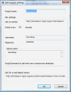
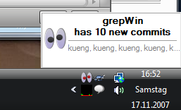
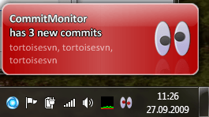
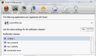
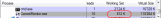

CommitMonitor
@@include("_includes/adsense_top.html")CommitMonitor is a small tool to monitor Apache™ Subversion® repositories for new commits. It has a very small memory footprint and resides in the system tray.

In case you have multiple repositories under an SVNParentPath with the SVNListParentPath directive activated in Apache, CommitMonitor can monitor these URLs too, as you can see in the screenshot above: the "Private Projects" is shown as a folder, which means this is an URL to an SVNParentPath URL.
The new commits are shown on the top right of the main dialog, while the commit log message is shown at the bottom right.
A double click on any revision in the top right view will fetch the diff for that revision as a unified diff so you can further inspect the commit. If you have TortoiseSVN installed, CommitMonitor automatically uses TortoiseSVN to do the diff.
Of course, you can configure the time interval CommitMonitor should check your repositories for new commits:
{kind=link}
Just make sure in case you want to monitor a public open source repository to set the check interval not too small - you don't want to hammer those repositories!
You can also put an svnrobots.txt file on your repository server to
set a minimum time interval. See the svnrobots documentation
for more details about this.
Once CommitMonitor has found new commits to one or more of the repositories you monitor, it shows a notification popup, and the system tray icon changes the "eyes" from black to red. And if you have the system tray animation enabled in the Options dialog, the eyes will also move around until you open CommitMonitor's main dialog (by doubleclicking on the system tray icon) and read the commits.
If you have Snarl installed, CommitMonitor automatically uses Snarl to show its popups:
CommitMonitor also registers itself with Snarl which will allow you to configure the popups in more detail:
 @@include("_includes/adsense_inpage.html"){kind=link}
As already mentioned, CommitMonitor resides in your system tray (if so required). Tools which do that should use as less resources as possible, and that's what CommitMonitor tries to do. As you can see in the screenshot below, when the program is idle (i.e., not currently connecting to a repository and downloading information) it only uses about 1MB of RAM. Of course, it uses more (about 15MB RAM) while it accesses the repositories.
{kind=link}
CommitMonitor is available under the GNU GPL v2.
You can either download an msi installer or a zipped exe file, whatever suits you:
Download page
Of course, the source code is available too. You can browse or check it
out directly from the Subversion repository.